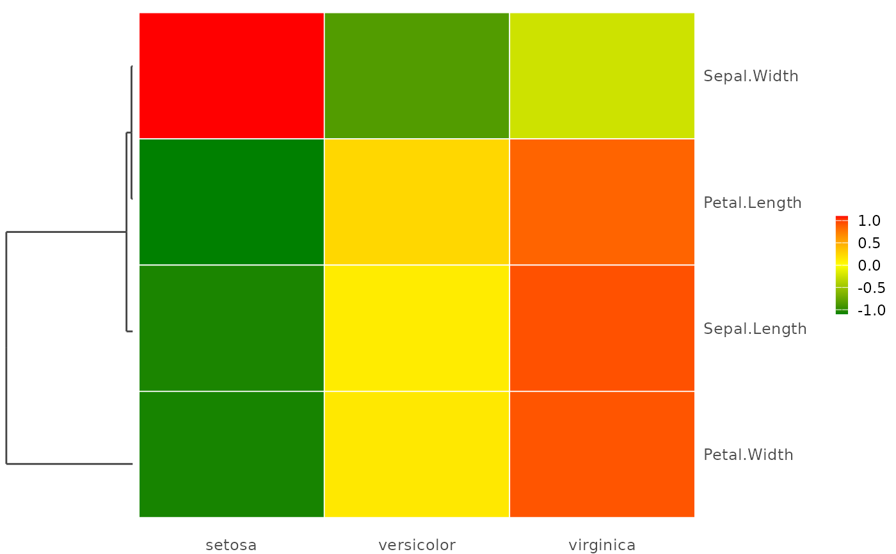
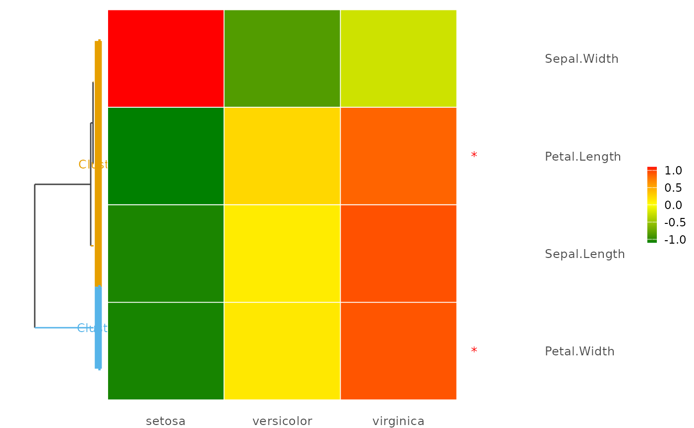
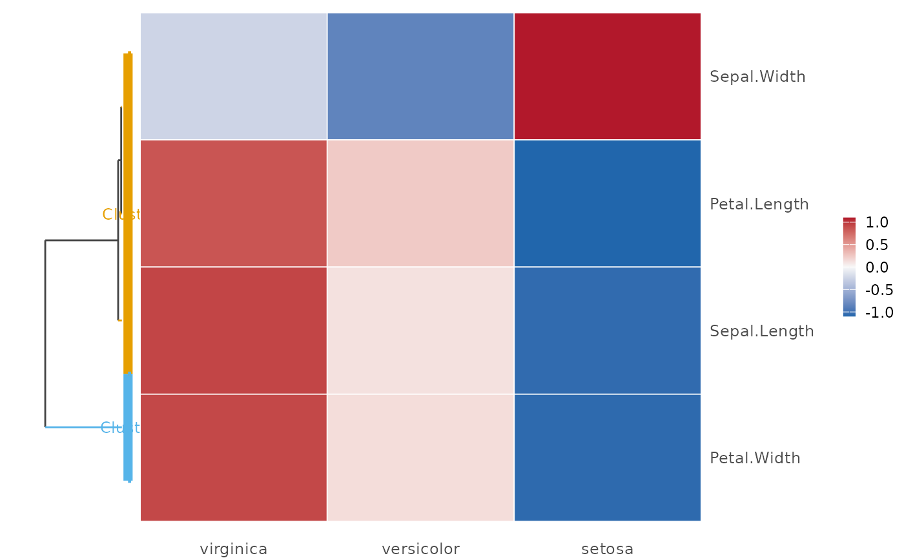

Mean Intensity Heatmap with Hierarchical Clustering Dendrogram
plot_meanmap.RdProduces a publication-ready mean intensity heatmap where rows are variables (e.g. metabolites) clustered by hierarchical clustering and columns are group means derived from a grouping variable in the metadata. A coloured dendrogram is aligned to the left of the heatmap, with optional cluster bracket annotations and per-row significance markers on the right.
This function is intended for visualising group-level mean differences across variables, for example, metabolite intensities across disease stages.
Usage
plot_meanmap(
x,
metadata = NULL,
group,
group_order = NULL,
sig_vars = NULL,
sig_marker = "*",
sig_color = "red",
clust_method = "ward.D2",
dist_method = "euclidean",
scale_vars = "none",
n_clusters = NULL,
cluster_labels = NULL,
cluster_colors = NULL,
heatmap_colors = c("#008000", "#FFFF00", "#FF0000"),
show_values = FALSE,
value_digits = 2L,
value_color = "black",
global_font_size = 11,
row_font_size = NULL,
col_font_size = NULL,
legend_font_size = NULL,
cluster_label_size = NULL,
sig_marker_size = NULL,
dend_width = 0.2,
legend_position = "right",
na_color = "grey80"
)Arguments
- x
A numeric matrix or data frame whose columns are the variables (e.g. metabolites) and whose rows are observations/samples. Must have column names.
- metadata
A data frame with the same number of rows as
xand valid column names. Must contain the column specified ingroup.- group
A single character string naming the column in
metadatathat defines sample groups. Group means are computed per level of this variable and used as heatmap columns.- group_order
A character vector specifying the display order of group levels (left to right). Must contain exactly the same levels as
metadata[[group]]. WhenNULL(default), levels are ordered as they appear infactor(metadata[[group]]).- sig_vars
A character vector of variable (column) names to mark with a significance marker on the right side of the heatmap. Default
NULL(no markers).- sig_marker
A single character string used as the significance marker symbol. Default
"*".- sig_color
A single character string (colour name or hex) for the significance marker. Default
"red".- clust_method
A single character string passed to the
methodargument ofhclust. Default"ward.D2".- dist_method
A single character string passed to the
methodargument ofdist. Default"euclidean".- scale_vars
A single character string controlling row-wise scaling applied before clustering and display. One of
"none"(default; use values as supplied),"zscore"(subtract row mean, divide by row SD), or"minmax"(scale each row to (0, 1) inclusive).- n_clusters
A positive integer or
NULL. When notNULL, the dendrogram is cut inton_clustersclusters usingcutree, each cluster is coloured with a distinct colour-blind-friendly palette, and cluster bracket + label annotations are added to the left of the dendrogram. DefaultNULL.- cluster_labels
A character vector of labels for each cluster, in order from the top of the plot to the bottom (i.e. in dendrogram leaf order). Must have length equal to
n_clusterswhen supplied. DefaultNULL, which auto-generates labels"Cluster I","Cluster II", etc.- cluster_colors
A character vector of colours for each cluster. Must have length equal to
n_clusterswhen supplied. DefaultNULL, which uses the Okabe-Ito colour-blind-safe palette.- heatmap_colors
A character vector of length \(\ge 2\) specifying the colour gradient for the heatmap fill, from low to high values. Default
c("#008000", "#FFFF00", "#FF0000")(green–yellow–red).- show_values
Logical. Whether to print the rounded mean value inside each heatmap cell. Default
FALSE.- value_digits
A single non-negative integer. Number of decimal places for in-cell value labels. Default
2. Ignored whenshow_values = FALSE.- value_color
A single character string for in-cell text colour. Default
"black".- global_font_size
Numeric. Base font size in points. Default
11.- row_font_size
Numeric or
NULL. Font size for row (variable) labels on the right y-axis. Derived fromglobal_font_sizewhenNULL(default).- col_font_size
Numeric or
NULL. Font size for column (group) labels on the x-axis. Derived fromglobal_font_sizewhenNULL(default).- legend_font_size
Numeric or
NULL. Font size for legend text. Derived fromglobal_font_sizewhenNULL(default).- cluster_label_size
Numeric or
NULL. Font size for cluster bracket labels. Derived fromglobal_font_sizewhenNULL(default). Ignored whenn_clustersisNULL.- sig_marker_size
Numeric or
NULL. Font size for significance markers. Derived fromglobal_font_sizewhenNULL(default).- dend_width
Numeric in (0, 1). Relative width of the dendrogram panel as a fraction of the total plot width. Default
0.2.- legend_position
A single character string for legend placement. One of
"right"(default),"bottom","left","top", or"none".- na_color
A single character string for the fill colour of
NAcells. Default"grey80".
Value
A patchwork object. The following attributes are attached:
mean_matrixThe \(p \times g\) matrix of group means (unscaled), rows in dendrogram leaf order.
scaled_matrixThe scaled version of
mean_matrixused for clustering and display (identical tomean_matrixwhenscale_vars = "none").hclust_objThe
hclustobject.leaf_orderInteger vector of row indices in dendrogram leaf order.
cluster_membershipNamed integer vector of cluster assignments per variable (only set when
n_clustersis notNULL).
Details
Algorithm overview
Group mean computation: For each level of
metadata[[group]], the column means ofxare computed (ignoringNAs), producing a \(p \times g\) matrix where \(p\) is the number of variables and \(g\) the number of groups.Optional scaling: When
scale_varsis"zscore"or"minmax", each row (variable) of the mean matrix is scaled independently before clustering and display.Clustering: Euclidean (or user-specified) distances are computed on the rows of the (possibly scaled) mean matrix and hierarchical clustering is applied.
Reordering: Rows are permuted to the leaf order of the dendrogram.
Dendrogram: Built via ggdendro with optional cluster colouring. A bracket-and-label annotation layer is added when
n_clustersis supplied.Heatmap: Built with
ggplot2::geom_tileusing a user-controlled colour gradient. Significance markers and in-cell values are added as optional annotation layers.Assembly:
patchwork::wrap_plots()aligns the two panels with zero inter-panel spacing.
Scaling recommendation: If variables are on comparable scales
(e.g. all z-scored or log-transformed), scale_vars = "none" is
appropriate. For raw intensities on very different scales, use
scale_vars = "zscore" to make the colour gradient interpretable
across all rows.
Examples
# \donttest{
## ── Basic example: iris mean intensity by species ────────────────────────
data(iris)
num_part <- iris[, 1:4]
meta_part <- data.frame(Species = iris$Species)
p <- plot_meanmap(
x = num_part,
metadata = meta_part,
group = "Species",
scale_vars = "zscore"
)
print(p)

## ── With cluster colouring and significance markers ──────────────────────
p2 <- plot_meanmap(
x = num_part,
metadata = meta_part,
group = "Species",
scale_vars = "zscore",
n_clusters = 2,
cluster_labels = c("Cluster I", "Cluster II"),
sig_vars = c("Petal.Length", "Petal.Width"),
sig_color = "red",
global_font_size = 11
)
print(p2)

## ── Custom group order and colour palette ────────────────────────────────
p3 <- plot_meanmap(
x = num_part,
metadata = meta_part,
group = "Species",
group_order = c("virginica", "versicolor", "setosa"),
scale_vars = "zscore",
n_clusters = 2,
heatmap_colors = c("#2166AC", "#F7F7F7", "#B2182B")
)
print(p3)

# }